Probabilistic modeling with Bayesian networks
Directed graphical models (a.k.a. Bayesian networks) are a family of probability distributions that admit a compact parametrization that can be naturally described using a directed graph.
The general idea behind this parametrization is surprisingly simple. Recall that by the chain rule, we can write any probability $p$ as:
A compact Bayesian network is a distribution in which each factor on the right hand side depends only on a small number of ancestor variables $x_{A_i}$:
For example, in a model with five variables, we may choose to approximate the factor $p(x_5 \mid x_4, x_3, x_2, x_1)$ with $p(x_5 \mid x_4, x_3)$. In this case, we write $x_{A_5} = \{x_4, x_3\}$.
Graphical representation
As an example, consider a model of a student’s grade on an exam. This grade depends on the exam’s difficulty $d$ and the student’s intelligence $i$; it also affects the quality $l$ of the reference letter from the professor who taught the course. The student’s intelligence $i$ affects the SAT score $s$ as well. Each variable is binary, except for $g$, which takes 3 possible values.
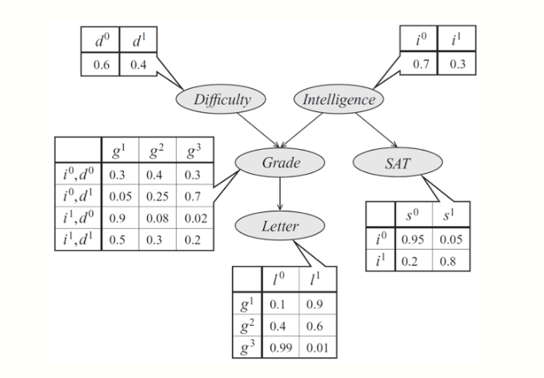
The joint probability distribution over the 5 variables naturally factorizes as follows:
The graphical representation of this distribution is a DAG that visually specifies how random variables depend on each other. The graph clearly indicates that the letter depends on the grade, which in turn depends on the student’s intelligence and the difficulty of the exam.
Another way to interpret directed graphs is in terms of stories for how the data was generated. In the above example, to determine the quality of the reference letter, we may first sample an intelligence level and an exam difficulty; then, a student’s grade is sampled given these parameters; finally, the recommendation letter is generated based on that grade.
Formal definition.
Formally, a Bayesian network is a directed graph $G = (V,E)$ together with
- A random variable $x_i$ for each node $i \in V$.
- One conditional probability distribution (CPD) $p(x_i \mid x_{A_i})$ per node, specifying the probability of $x_i$ conditioned on its parents’ values.
Thus, a Bayesian network defines a probability distribution $p$. Conversely, we say that a probability $p$ factorizes over a DAG $G$ if it can be decomposed into a product of factors, as specified by $G$.
It is not hard to see that a probability represented by a Bayesian network will be valid: clearly, it will be non-negative and one can show using an induction argument (and using the fact that the CPDs are valid probabilities) that the sum over all variable assignments will be one. Conversely, we can also show by counter-example that when contains cycles, its associated probability may not sum to one.
The dependencies of a Bayes net
To summarize, Bayesian networks represent probability distributions that can be formed via products of smaller, local conditional probability distributions (one for each variable). By expressing a probability in this form, we are introducing into our model assumptions that certain variables are independent.
This raises the question: which independence assumptions are we exactly making by using a Bayesian network model with a given structure described by $G$? This question is important for two reasons: we should know precisely what model assumptions we are making (and whether they are correct); also, this information will help us design more efficient inference algorithms later on.
Let us use the notation $I(p)$ to denote the set of all independencies that hold for a joint distribution $p$. For example, if $p(x,y) = p(x) p(y)$, then we say that $x \perp y \in I(p)$.
Independencies described by directed graphs
It turns out that a Bayesian network $p$ very elegantly describes many independencies in $I(p)$; these independencies can be recovered from the graph by looking at three types of structures.
For simplicity, let’s start by looking at a Bayes net $G$ with three nodes: $A$, $B$, and $C$. In this case, essentially has only three possible structures, each of which leads to different independence assumptions. The interested reader can easily prove these results using a bit of algebra.
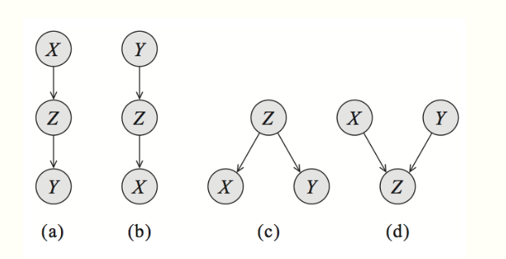
Common parent. If $G$ is of the form $A \leftarrow B \rightarrow C$, and $B$ is observed, then $A \perp C \mid B$. However, if $B$ is unobserved, then $A \not\perp C$. Intuitively this stems from the fact that $B$ contains all the information that determines the outcomes of $A$ and $C$; once it is observed, there is nothing else that affects these variables’ outcomes.
Cascade.: If $G$ equals $A \rightarrow B \rightarrow C$, and $B$ is again observed, then, again $A \perp C \mid B$. However, if $B$ is unobserved, then $A \not\perp C$. Here, the intuition is again that $B$ holds all the information that determines the outcome of $C$; thus, it does not matter what value $A$ takes.
- V-structure. (also known as explaining away): If $G$ is $A \rightarrow C \leftarrow B$, then knowing $C$ couples $A$ and $B$. In other words, $A \perp B$ if $C$ is unobserved, but $A \not\perp B \mid C$ if $C$ is observed.
The latter case requires additional explanation. Suppose that $C$ is a Boolean variable that indicates whether our lawn is wet one morning; $A$ and $B$ are two explanations for it being wet: either it rained (indicated by $A$), or the sprinkler turned on (indicated by $B$). If we know that the grass is wet ($C$ is true) and the sprinkler didn’t go on ($B$ is false), then the probability that $A$ is true must be one, because that is the only other possible explanation. Hence, $A$ and $B$ are not independent given $C$.
These structures clearly describe the independencies encoded by a three-variable Bayesian net.
$d$-separation
We can extend them to general networks by applying them recursively over any larger graph. This leads to a notion called $d$-separation (where $d$ stands for directed).
Let $Q$, $W$, and $O$ be three sets of nodes in a Bayesian Network $G$. We say that $Q$ and $W$ are $d$-separated given $O$ (i.e. the variables $O$ are observed) if $Q$ and $W$ are not connected by an active path. An undirected path in $G$ is called active given observed variables $O$ if for every consecutive triple of variables $X,Y,Z$ on the path, one of the following holds:
- $X \leftarrow Y \leftarrow Z$, and $Y$ is unobserved $Y \not\in O$
- $X \rightarrow Y \rightarrow Z$, and $Y$ is unobserved $Y \not\in O$
- $X \leftarrow Y \rightarrow Z$, and $Y$ is unobserved $Y \not\in O$
- $X \rightarrow Y \leftarrow Z$, and $Y$ or any of its descendants are observed.
In other words: A trail $X1, \cdots, X_n$ is active given Z if:
- for any v-structure we have that $X_i$ or one of its descendants
$\in$ Z - no other $X_i$ is in Z
In this example, $X_1$ and $X_6$ are $d$-separated given $X_2, X_3$.
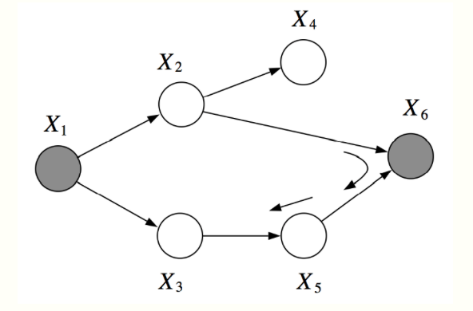
However, $X_2, X_3$ are not $d$-separated given $X_1, X_6$. There is an active pass which passed through the V-structure created when $X_6$ is observed.
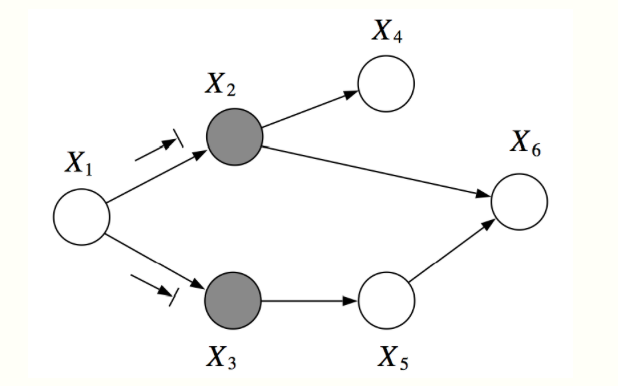
For example, in the graph below, $X_1$ and $X_6$ are $d$-separated given $X_2, X_3$. However, $X_2, X_3$ are not $d$-separated given $X_1, X_6$, because we can find an active path $(X_2, X_6, X_5, X_3)$
The notion of $d$-separation is useful, because it lets us describe a large fraction of the dependencies that hold in our model. Let $I(G) = \{(X \perp Y \mid Z) : \text{$X,Y$ are $d$-sep given $Z$}\}$ be a set of variables that are $d$-separated in $G$.
Two theorem
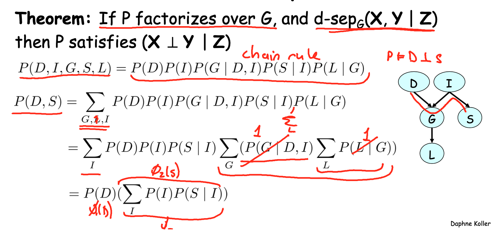
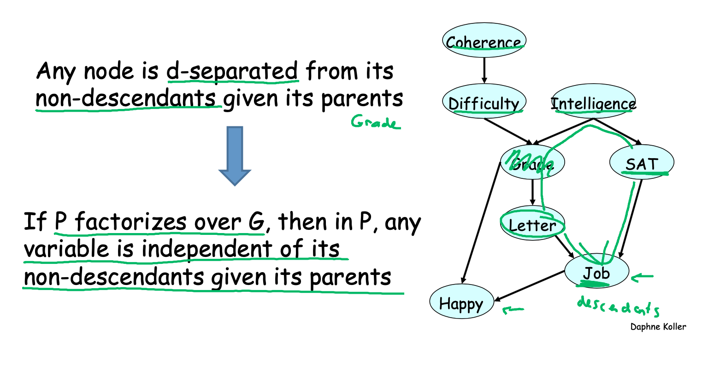
$I$-map
If $p$ factorizes over $G$, then $I(G) \subseteq I(p)$. In this case, we say that $G$ is an $I$-map (independence map) for $p$.
In other words, all the independencies encoded in $G$ are sound: variables that are $d$-separated in $G$ are truly independent in $p$. However, the converse is not true: a distribution may factorize over $G$, yet have independencies that are not captured in $G$.
In a way this is almost a trivial statement. If $p(x,y) = p(x)p(y)$, then this distribution still factorizes over the graph $y \rightarrow x$, since we can always write it as $p(x,y) = p(x\mid y)p(y)$ with a CPD $p(x\mid y)$ in which the probability of $x$ does not actually vary with $y$. However, we can construct a graph that matches the structure of $p$ by simply removing that unnecessary edge.
Theorem
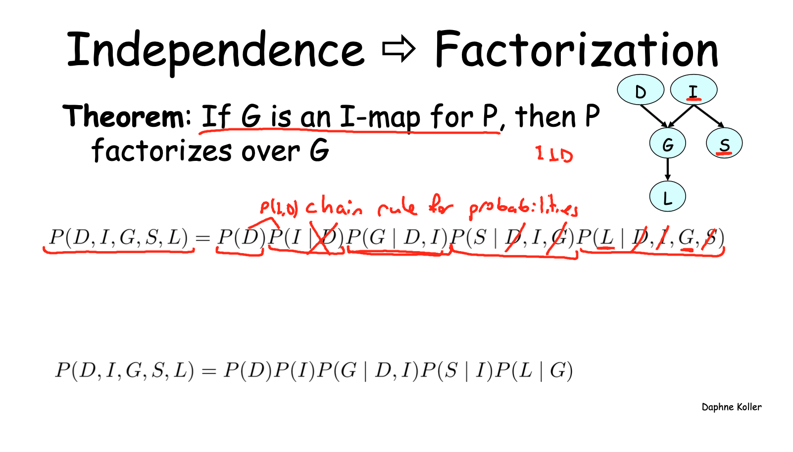
Summary
Two equivalent views of graph structure:
- Factorization: $G$ allows $P$ to be represented
- I-map: Independencies encoded by G hold in P
- If $P$ factorizes over a graph $G$, we can read from the graph independencies that must hold in $P$ (an independency map)
Naive Bayes
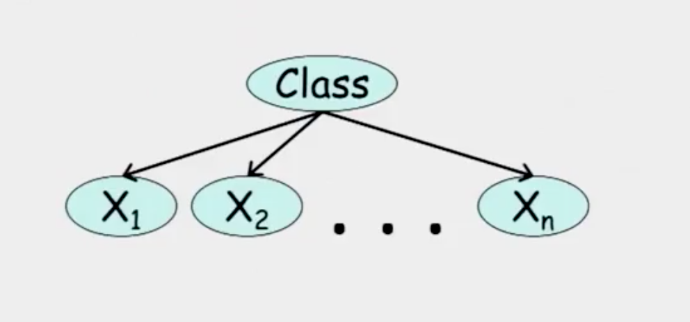
From the graph,
Then, we can get
Therefore, the raito of two class is:
Indtroduce Bernoulli(or others) to calcute probabilities
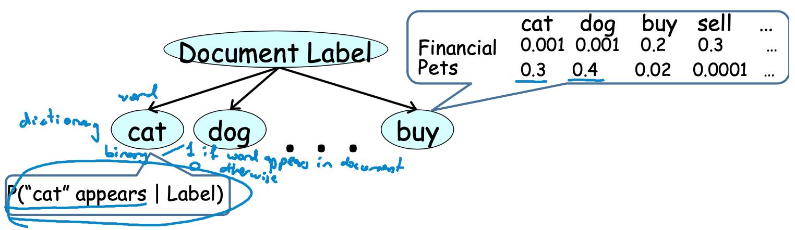
- Simple approach for classification
- Computationally efficient
- Easy to construct
- Surprisingly effective in domains with many weakly relevant features
- Strong independence assumptions reduce performance when many features are strongly correlated
Questions
Calculate the number of parameters of a distribution model
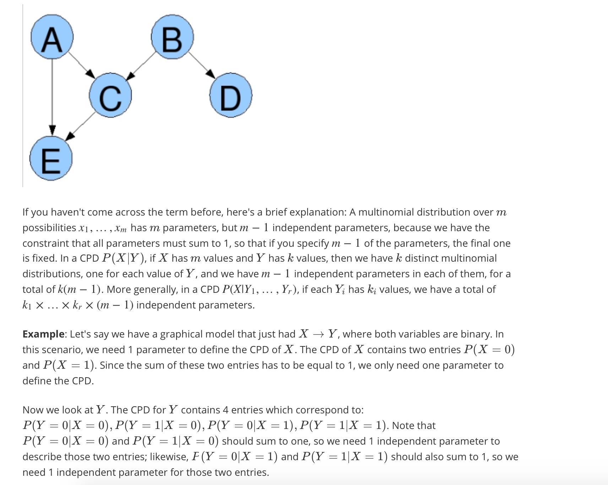
Inter-causal reasoning
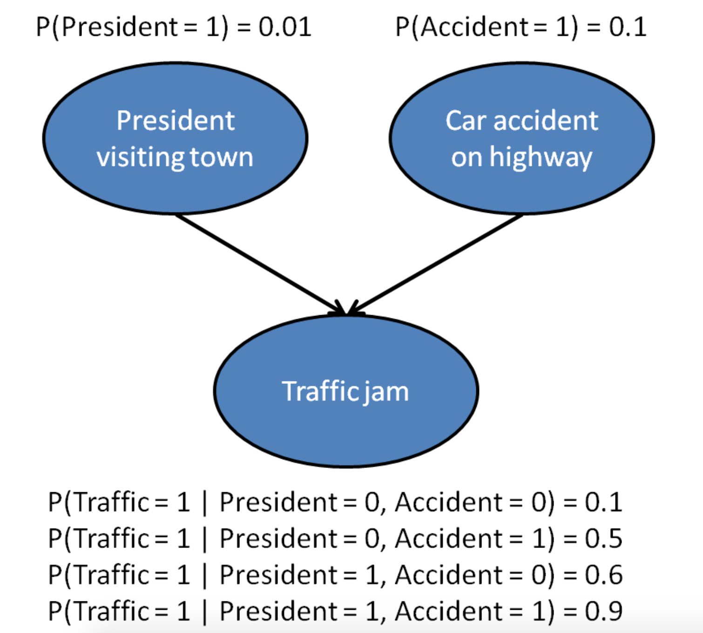
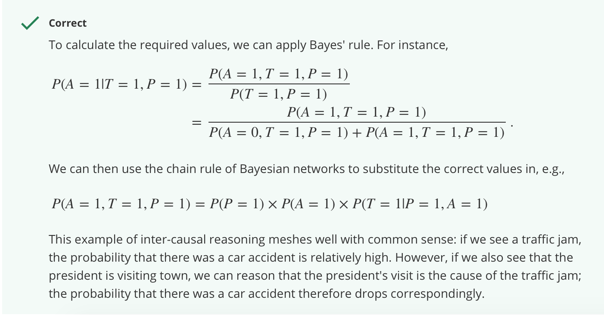
Independencies in a graph
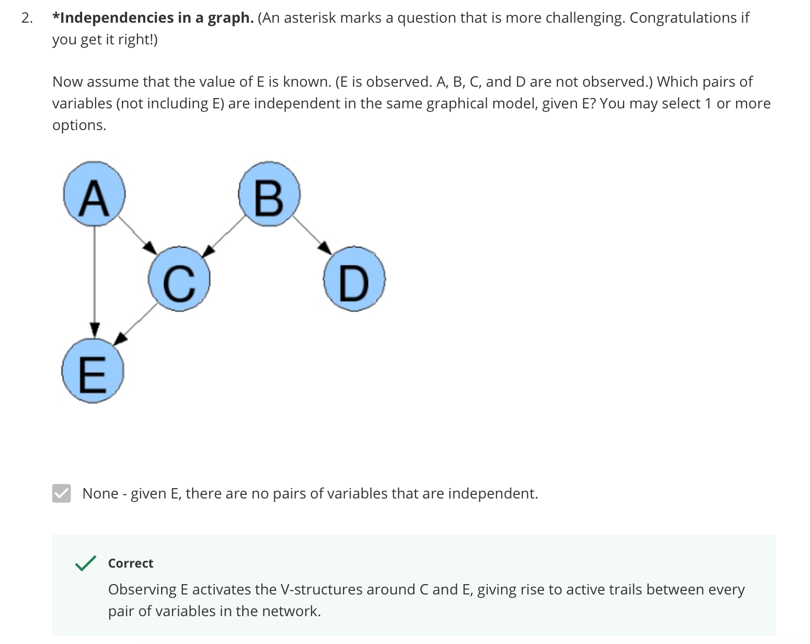
Reference
- https://ermongroup.github.io/cs228-notes/
- Course note from Coursera course Probabilistic graphical models lectured by Daphne Koller